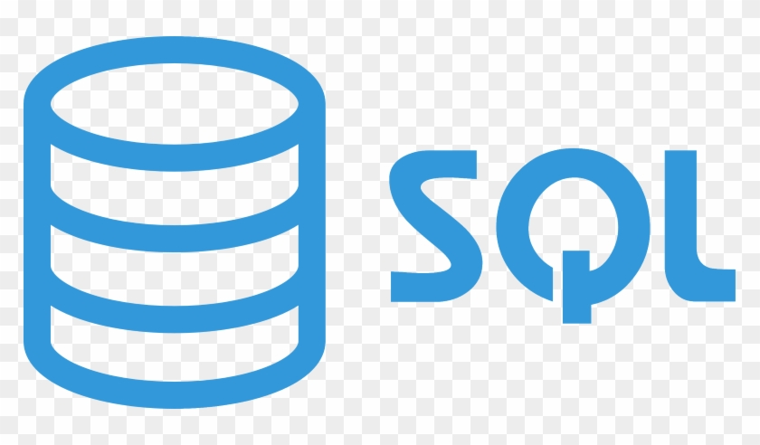
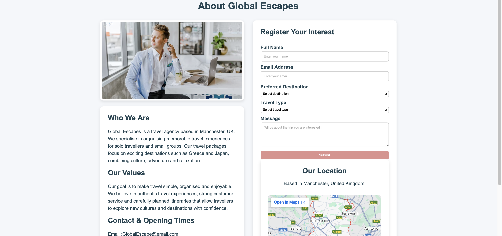

Titanic Survival Analysis
SQL + Power BIAnalysed survival patterns by class, gender, age groups and fare bands using SQL queries and built a Power BI dashboard.
- Cleaned data and created analysis views
- Built survival rate breakdowns
Data Analyst • Pharma Background • Manchester (UK)
I’m a data analyst with a background in pharmaceutical quality, where accuracy, data integrity, and structured reporting are critical. Over 6+ years, I’ve worked with analytical data in GMP environments — identifying trends, investigating issues, and ensuring results are reliable and audit-ready.
I’m now transitioning fully into data analytics and project managment, building projects using Excel, SQL, Power BI, and Python. I enjoy taking messy or complex datasets and turning them into clear insights, dashboards, and practical outputs that support better decision-making.
My goal is to combine my industry experience with data skills to contribute to teams that value data quality, reporting, and continuous improvement.
Cleaning, formulas, pivot tables, charts, reporting templates.

Querying, filtering, joins, aggregations, views, basic data modelling.

Dashboards, Power Query, basic DAX, KPI visuals, storytelling.
Pandas basics, data cleaning, simple analysis and visuals.
Analysed survival patterns by class, gender, age groups and fare bands using SQL queries and built a Power BI dashboard.
Analysed how behavioural, lifestyle and environmental factors influence academic performance, identifying key drivers such as study time, attendance and sleep patterns.

Designed and built a multi-page travel website showcasing destinations such as Greece and Japan.
Featured Projects
View all →
Titanic Survival Analysis
SQL + Power BI
Student Performance Analysis
Excel + SQL + Power BI
Travel Agency Website
HTML
CSS
Pharmaceutical Industry (GMP Environment)
Regulated & Analytical Data
I’m open to junior roles and projects where I can support reporting, dashboards, and data quality.
Get in touch